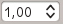

22.2.5. The Legend Item
The Legend item is a box or a table that explains the meanings
of the symbols used on the map. A legend is then bound to a map item. You can
add a legend item with the  Add Legend tool following
items creation instructions and manipulate it the
same way as exposed in Interacting with layout items.
Add Legend tool following
items creation instructions and manipulate it the
same way as exposed in Interacting with layout items.
By default, the legend item displays all available layers and can be refined using its Item Properties panel. Other than the items common properties, this feature has the following functionalities (see Fig. 22.26):

Fig. 22.26 Legend Item Properties Panel
22.2.5.1. Main properties
The Main properties group of the legend Item Properties panel provides the following functionalities (see Fig. 22.27):
Fig. 22.27 Legend Main properties group
In Main properties you can:
Change the Title of the legend. It can be made dynamic using the data-defined override setting, useful for example when generating an atlas;
Choose which Map item the current legend will refer to. By default, the map over which the legend item is drawn is picked. If none, then it falls back to the reference map.
Note
Variables of the linked map item (@map_id, @map_scale, @map_extent…) are also accessible from data-defined properties of the legend.
Wrap the text of the legend on a given character: each time the character appears, it’s replaced with a line break;
Set the symbols and text placement in the legend: the Arrangement can be Symbols on left or Symbols on right. The default value depends on the locale in use (right-to-left based or not).
Use
 Resize to fit contents to control whether or
not a legend should be automatically resized to fit its contents. If
unchecked, then the legend will never resize and instead just stick to
whatever size the user has set. Any content which doesn’t fit the size
is cropped out.
Resize to fit contents to control whether or
not a legend should be automatically resized to fit its contents. If
unchecked, then the legend will never resize and instead just stick to
whatever size the user has set. Any content which doesn’t fit the size
is cropped out.
22.2.5.2. Legend items
The Legend items group of the legend Item Properties panel provides the following functionalities (see Fig. 22.28):

Fig. 22.28 Legend Items group
The legend will be updated automatically if
Auto update
is checked. When Auto update is unchecked this will give you more
control over the legend items. All the icons below the legend items list will
be activated.The legend items window lists all legend items and allows you to change item order, group layers, remove and restore items in the list, edit layer names and symbology and add a filter.
The item order can be changed using the
 and
and  buttons or
with ‘drag-and-drop’ functionality. The order can not be changed for WMS
legend graphics.
buttons or
with ‘drag-and-drop’ functionality. The order can not be changed for WMS
legend graphics.Use the
 button to add a legend group.
button to add a legend group.Use the
 button to add layers and
button to add layers and  button to remove
groups, layers or symbol classes.
button to remove
groups, layers or symbol classes.The
 button is used to edit the layer, group name or title.
First you need to select the legend item. Double-clicking the item also
opens the text box to rename it.
button is used to edit the layer, group name or title.
First you need to select the legend item. Double-clicking the item also
opens the text box to rename it.The
 button uses expressions to customize each symbol label
of the selected layer (see Data-define the legend labels)
button uses expressions to customize each symbol label
of the selected layer (see Data-define the legend labels)The
 button adds a feature count for each class of vector layer.
button adds a feature count for each class of vector layer.The Filter legend by expression helps you filter which of the legend items of a layer will be displayed, i.e. using a layer that has different legend items (e.g., from a rule-based or categorized symbology), you can specify a boolean expression to remove from the legend tree, styles that have no feature satisfying a condition. Note that the features are nevertheless kept and shown in the layout map item.
While the default behavior of the legend item is to mimic the Layers panel tree, displaying the same groups, layers and classes of symbology, right-click any item offers you options to hide layer’s name or raise it as a group or subgroup. In case you have made some changes to a layer, you can revert them by choosing Reset to defaults from the contextual menu of the legend entry.
After changing the symbology in the QGIS main window, you can click on Update All to adapt the changes in the legend element of the print layout.
With the
Only show items inside linked maps, only the
legend items visible in the linked map will be listed in the legend. If you
have more than one map you can click on … and select other
maps from your layout.
This tool remains available when Auto-update is active.While generating an atlas with polygon features, you can filter out legend items that lie outside the current atlas feature. To do that, check the
Only show items inside current atlas feature option.
{kind=link}
Data-define the legend labels
allows you to add expressions to
each symbol label of a given layer. New variables (@symbol_label,
@symbol_id and @symbol_count) help you interact with the legend entry.
For example, given a regions layer categorized by its type field,
you can append to each class in the legend their number of features and total area,
e.g. Borough (3) - 850ha:
Select the layer entry in the legend tree
Press the
button, opening the Expression String Builder
dialogEnter the following expression (assuming symbol labels have not been edited):
format( '%1 (%2) - %3ha', @symbol_label, @symbol_count, round( aggregate(@layer, 'sum', $area, filter:= "type"=@symbol_label)/10000 ) )Press OK
Customizing legend items
Legend items can also be customized individually in the Legend Items Properties.
But these customization can only be done with Auto update disabled.
Double-clicking on an item or pressing Edit selected item properties
allows for futher customization.
Label
For all item types it allows to modify the label text by typing in or by inserting expressions
using the Insert or Edit an Expression.
Expressions can also be added directly anywhere in the item’s label by using the
[% expression %] notation.
Columns
The Legend Item Property also allows you to control the column splitting behaviour by forcing the column split to occur after a specific item or all symbols of a layer. Automatic splitting of a layer and its child can also be allowed or blocked on a layer-basis in this widget.
Patch
For items with a symbol, the Legend Item Property allows you to specify the maximum height and width that a symbol can occupy.
For vector symbols, you can specify a custom shape for the symbol. The shapes are usually defined by an expression to represent the geometry in a simple plane, but those symbols can also be saved in the style manager and imported later. The default symbol for each geometry type can also be controlled via the style manager.
Custom Symbol
A custom symbol can also be specified for vector symbols. This can be useful to tweak the render of a specific symbol, to enhance it in the legend or have a symbol independent from its true symbol preview. This custom symbol will override the legend symbol, but will take into account the symbol Patch specified.
22.2.5.3. Fonts and text formatting
The Fonts and text formatting group of the legend Item Properties panel provides the following functionalities:

Fig. 22.29 Legend Fonts properties
You can change the font of the legend title, group, subgroup and item (feature) in the legend item using the font selector widget, providing all the capabilities of text formatting (font spacing control, mixed HTML formatting, coloring, blending, background, text buffer, shadow, …)
For each of these levels you can set the text Alignment: it can be Left (default for left-to-right based locales), Center or Right (default for right-to-left based locales).
22.2.5.4. Columns
Under the Columns group of the legend Item Properties panel, legend items can be arranged over several columns:
Set the number of columns in the Count  field. This value can be made dynamic e.g., following atlas features, legend contents, the frame size…
- Equal column widths sets how legend columns should be
adjusted.
The
Split layers option allows a categorized or a
graduated layer legend to be divided between columns.
{kind=link}
Fig. 22.30 Legend Columns settings
22.2.5.5. Symbol
The Symbol group of the legend Item Properties panel configures the size of symbols displayed next to the legend labels. You can:
Set the Symbol width and Symbol height
Set the markers’ Min symbol size and Max symbol size:
0.00mmmeans there is no value set.- Draw stroke for raster symbols: this adds an outline
to the symbol representing the band color of the raster layer; you can set
both the Stroke color and Tickness.

Fig. 22.31 Legend Symbol configuration
22.2.5.6. WMS LegendGraphic
The WMS LegendGraphic section of the legend Item Properties panel provide the following functionalities (see Fig. 22.32):

Fig. 22.32 WMS LegendGraphic
When you have added a WMS layer and you insert a legend item, a request will be sent to the WMS server to provide a WMS legend. This Legend will only be shown if the WMS server provides the GetLegendGraphic capability. The WMS legend content will be provided as a raster image.
WMS LegendGraphic is used to be able to adjust the Legend width and the Legend height of the WMS legend raster image.
22.2.5.7. Spacing

The Spacing section allows you to customize the spacing within the legend. Spacing can greatly help denote the groupement of items in the legend and their relation.
Spacing around and before title, groups, subgroups, symbols, labels, boxes, columns and lines can be customized through this dialog.